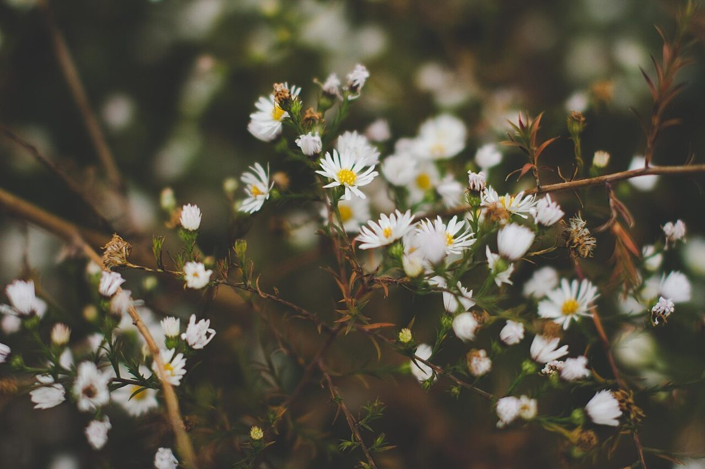
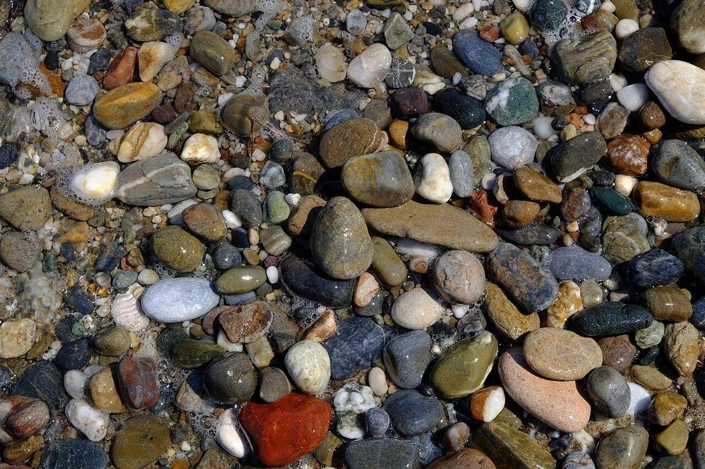
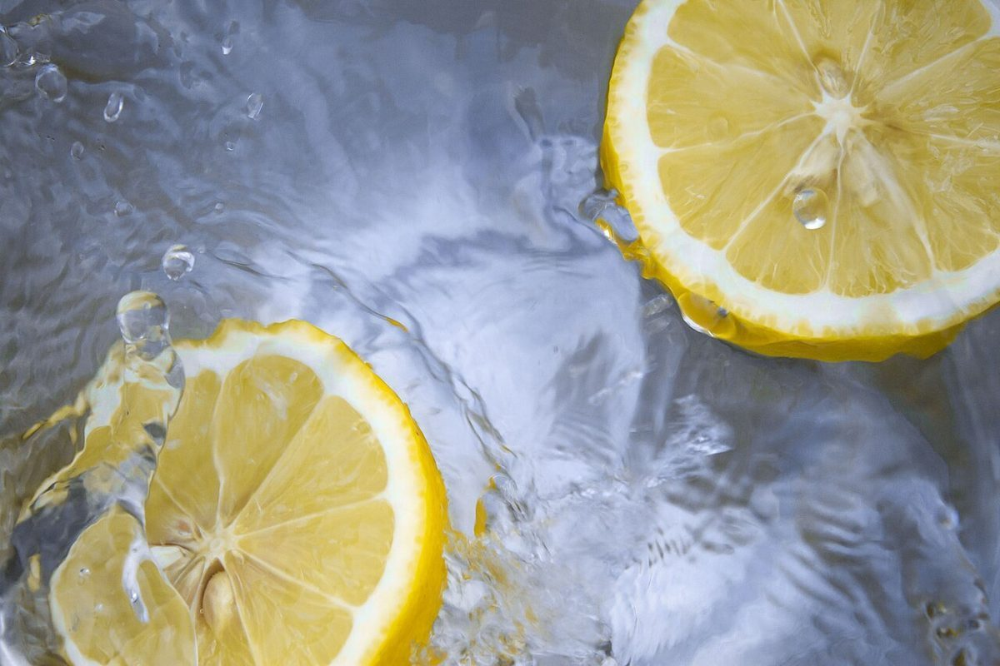
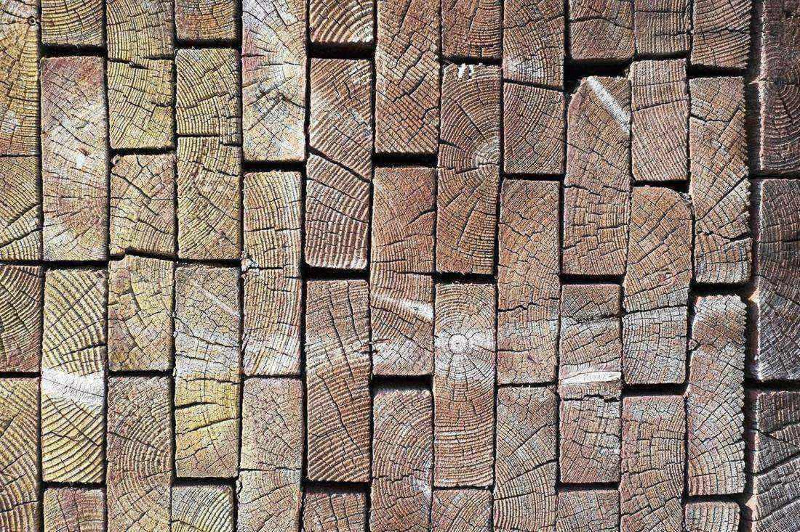
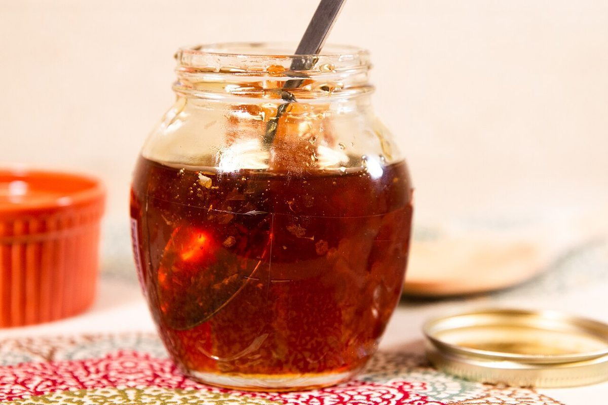
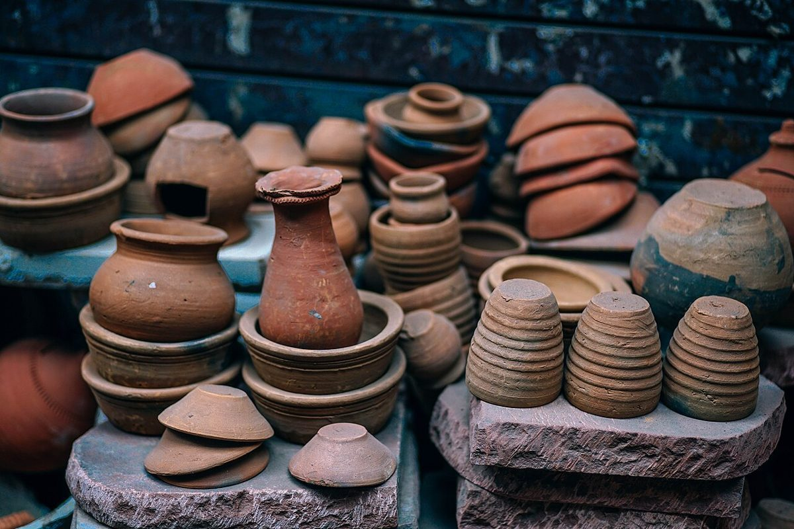
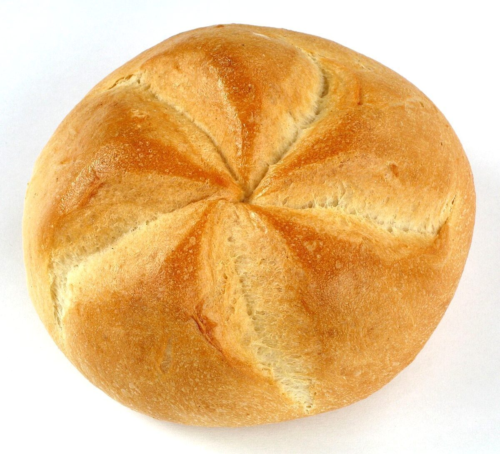
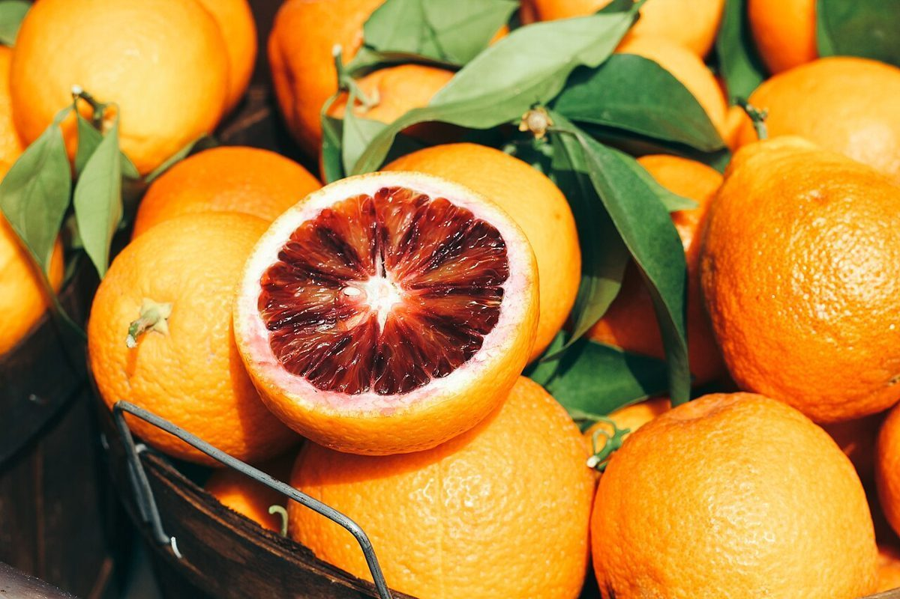

制作側の連想
水時計の部位を、配置図にしてみる
水時計の部位を図にしたもので、制作側の連想です。お店の理念・由来とは無関係で、実際の装置の仕様を示すものでもありません。 六つの部位に番号をふり、上の図と並べています。
凡例
六つの部位
- 1給水槽上に据えて水をためておく容器で、ここから下へ水が流れ出す部分。
- 2調整コックつまみを回して、流れる水の量を加減する小さな弁。
- 3導水管給水槽から下の容器まで、水を細く運ぶ管。
- 4受水槽管から落ちた水をためていく、下の容器。
- 5浮き受水槽の水面に浮かんで、水位とともに上がっていく部品。
- 6目盛り棒浮きにつながる細い棒で、刻んだ目盛りから水位を読む部分。
写真(イメージ)
写真(イメージ)






写真はイメージです。お店のものではありません。
ご案内
お店のこと(確認できたものだけ)
| 所在地 | 〒509-0238 岐阜県可児市大森１３７４ メルベーユ1374 |
|---|---|
| 電話 | 準備中 |
| 営業時間 | 準備中 |
| 定休日 | 準備中 |
| ご予約 | 準備中 |
| 駐車場 | 準備中 |
| SNS | Instagram @n2encarre |